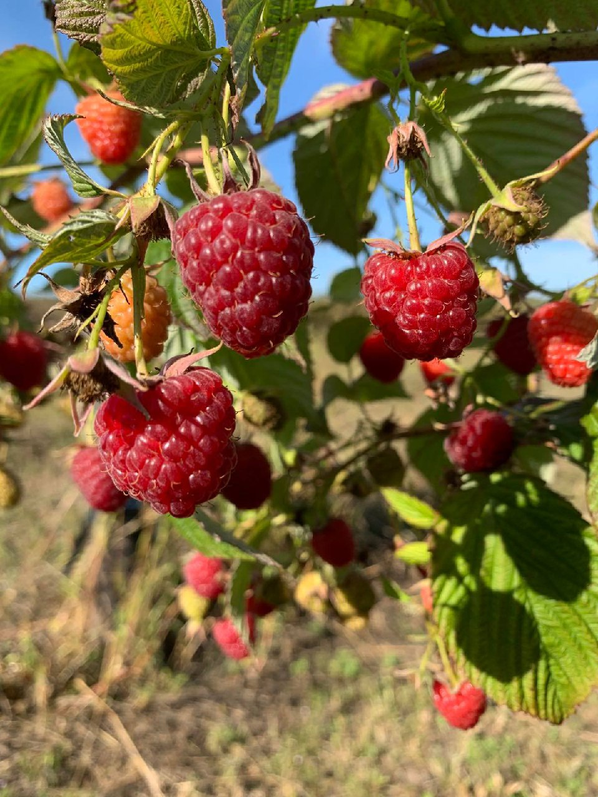

Це ремонтантний (повторноплодючий) сорт, виведений голландською селекційною компанією Advanta Seeds (тепер — Syngenta). Його вирощують переважно в комерційних цілях через дуже високу врожайність, відмінну транспортабельність та стабільну якість ягід.

Тип: ремонтантний
Термін дозрівання: ранній — перші ягоди достигають уже наприкінці липня – на початку серпня
Кущ: сильнорослий, прямостоячий, висотою до 2 м.
Ягоди: великі (6–8 г), конічної форми, однорідні за розміром, яскраво-червоні з блиском
Смак: приємний, солодко-кислий, із вираженим ароматом (оцінюється як «комерційний» — збалансований, не надто солодкий).
Урожайність: дуже висока — до 20 т/га при інтенсивному вирощуванні.
Транспортабельність: відмінна — ягода не втрачає форму при зборі, зберіганні та перевезенні.
Стійкість до хвороб: висока стійкість до ботритісу (сірої гнилі), кореневих гнилей та іржі.
Морозостійкість: середня (до -20...-22 °C), рекомендоване укриття або мульчування в холодних регіонах.